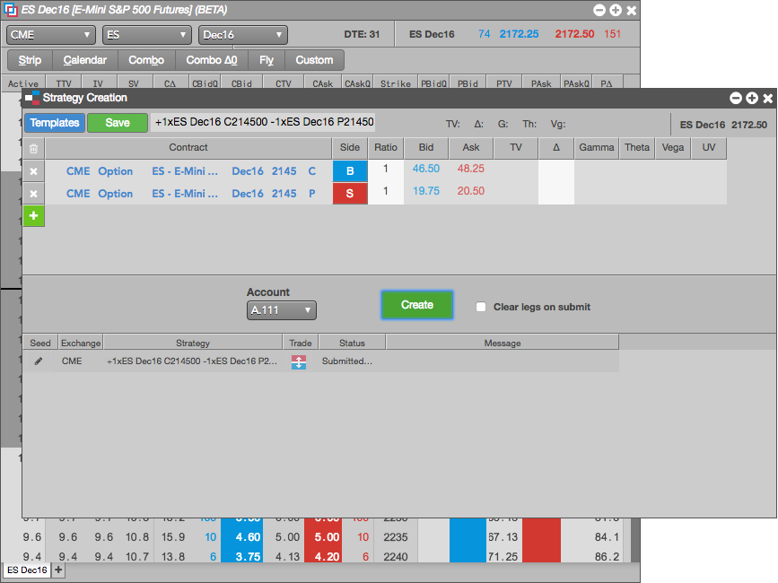
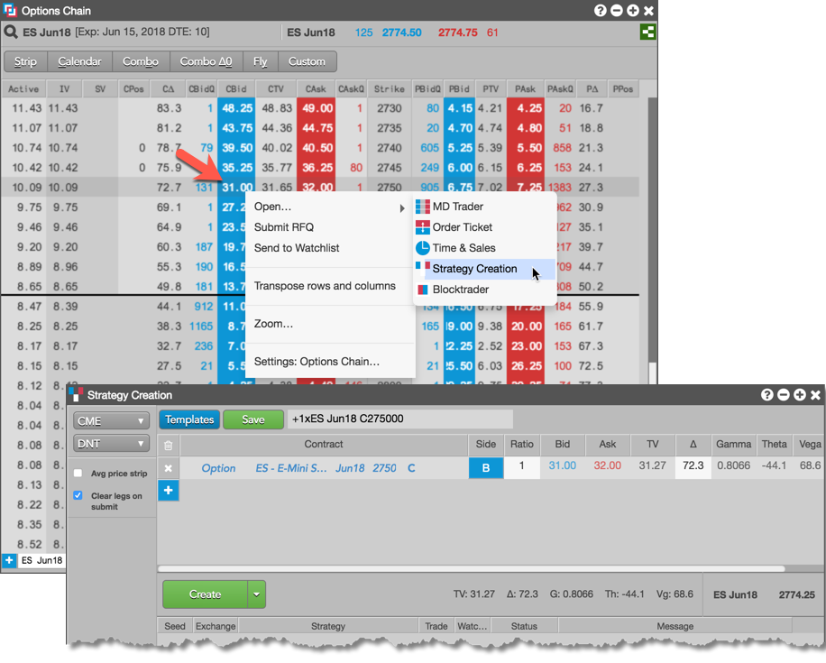
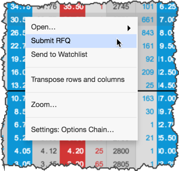

From the Options Chain, you can create a synthetic options spread as a user-defined strategy in the Strategy Creation widget. These spreads can be published to the market by the exchange and made available from trading in the current trading session.
The Options Chain provides quick access to the following commonly-used strategies as well as a custom option to define your own strategies.
When you select one of the strategies, the Options Chain automatically ensures that strategies contain the proper relationship, quantities, and ratios for the strategy legs. For example, if you select a Combo strategy and select one end of the range, the Options Chain automatically adds all of the intervening legs.

In the Options Chain, you can also send an individual options contract to the Strategy Creation widget to facilitate building a strategy. Right-click the data unique to the Call or Put options contract and select Open | Strategy Creation to open the widget seeded with the selected contract.

In addition, you can submit an RFQ for a single options contract in the Options Chain. Right-click the data unique to the Call or Put options contract and select Submit RFQ.
